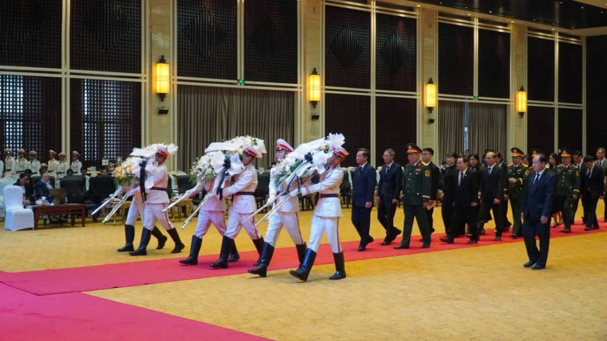

VOV.VN - Trong bầu không khí trang nghiêm và xúc động, các đại biểu đã dành một phút mặc niệm tưởng nhớ nguyên Chủ tịch Đảng, nguyên Chủ tịch nước CHDCND Lào Khamtay Siphandone.
Sáng 5/4, Đoàn đại biểu Đại sứ quán, các cơ quan đại diện Việt Nam tại Lào và cộng đồng người Việt tại Lào do Đại sứ đặc mệnh toàn quyền nước Cộng hòa XHCN Việt Nam tại nước Cộng hoà DCND Lào Nguyễn Minh Tâm dẫn đầu, đến đặt vòng hoa, viếng đồng chí Khamtay Siphandone.
Đoàn đại biểu Đại sứ quán, các cơ quan đại diện Việt Nam tại Lào và cộng đồng người Việt tại Lào đặt vòng hoa, viếng đồng chí Khamtay Siphandone
Trong bầu không khí trang nghiêm và xúc động, các đại biểu đã dành một phút mặc niệm tưởng nhớ nguyên Chủ tịch Đảng, nguyên Chủ tịch nước CHDCND Lào Khamtay Siphandone.
Thay mặt cán bộ, nhân viên Đại sứ quán Việt Nam và các cơ quan đại diện Việt Nam bên cạnh Đại sứ quán, Đại sứ Nguyễn Minh Tâm đã gửi lời chia buồn sâu sắc tới toàn thể gia quyến cố Chủ tịch Khamtay Siphandone.
Các đại biểu dành một phút mặc niệm tưởng nhớ đồng chí Khamtay Siphandone
Đại sứ Nguyễn Minh Tâm nhấn mạnh, nguyên Chủ tịch Đảng, nguyên Chủ tịch nước CHDCND Lào Khamtay Siphandone là nhà lãnh đạo xuất sắc, người con ưu tú của nhân dân các dân tộc Lào, người chiến sĩ cách mạng kiên trung, suốt đời hy sinh phấn đấu vì độc lập dân tộc, tự do, hạnh phúc của nhân dân và sự phát triển phồn vinh của đất nước Lào.
Sau lễ viếng, Đại sứ Việt Nam tại Lào Nguyễn Minh Tâm đã xúc động ghi sổ tang: “Đại sứ quán, các cơ quan bên cạnh Đại sứ quán và cộng đồng người Việt Nam tại Lào xin gửi tới Đảng, Nhà nước, nhân dân các dân tộc Lào và gia quyến đồng chí Khamtay Siphandone lời chia buồn sâu sắc”.